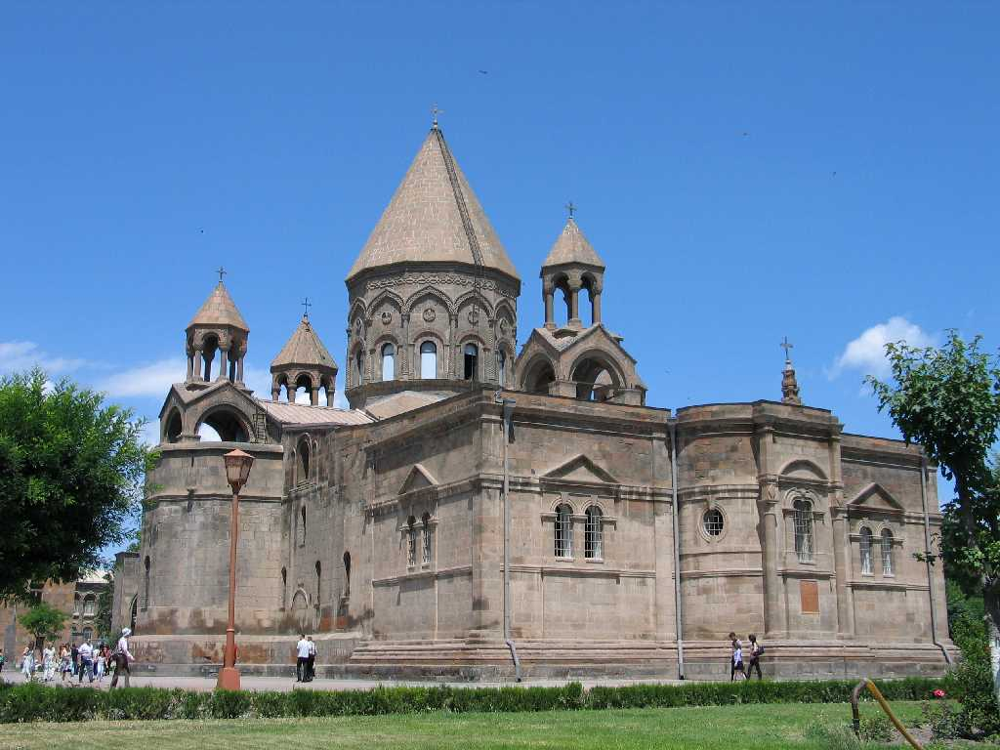

Echmiadzin Cathedral
アルメニア正教の総本山 聖グレゴリウスはこの地でキリストが降りて金の金槌で地面を打つのを見 たことからこの地に木造の教会を創建し３０１年アルメニアはキリスト教を世界最初の国教とした その後５世紀になると石造りに改修され７世紀１７世紀の改修を経て１９世紀に宝物館が増設されキリストの脇腹を刺したと伝えられる槍やノアの方舟の破片といった教会の秘蔵の聖遺物や宝石付きの十字架など祭礼に使う品々が展示されてい る